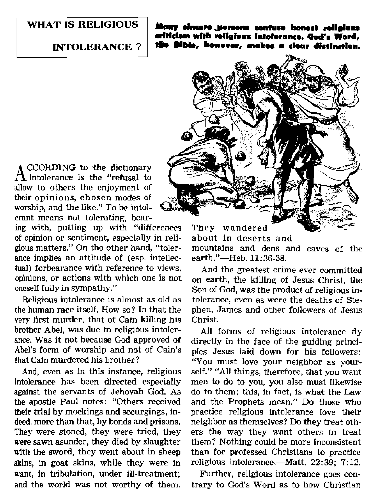
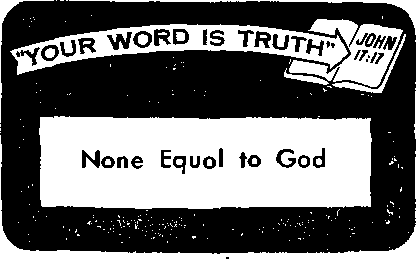

^he Road to Mediocrity
$
ey Come on the Wind
Ibu Can Be a Good Listener
V

JUNE 8. 1958
MISSION OF THIS JOURNAL
News sources that ore able to keep you awake to the vital issues of our times must be unfettered by censorship and selfish interests. “Awake!" has no fetters, it recognizes facts, faces facts, is free to publish facts. It is not bound by political ambitions or obligations; it is unhampered by advertisers whose toes must not be trodden on; it is unprejudiced by traditional creeds. This journal keeps itself free that It may speak freely to you. But it does not abuse its freedom. It maintains integrity to truth.
“AwakeI" uses the regular news channels, but is not dependent on them. Its own correspondents are on ail continents, in scores of nations. From the four corners of the earth their uncensored, on-the-scenes reports come to you through these columns. This journal's viewpoint is not narrow, but is international. It is read in many nations, in many languages, by persons of all ages. Through its pages many fields of knowledge poss in review—government, commerce, religion, history, geography, science, social conditions, natural wonders—why, its coverage is as brood as the earth and as high as the heavens.
“Awake!" pledges itself to righteous principles, to exposing hidden fees and subtle dangers, to championing freedom for all, to comforting mourners and strengthening those disheartened by the failures of a delinquent world, reflecting sure hope far the establishment of a righteous New World.
Get acquainted with "Awake!" Keep awake by reading "Awake/"
Published Semimonthly by
WATCHTOWER B1DLE AND TRACT SOCIETY OF NEW YORK, INC.
117 Adams Street Brooklyn 1, N.Y., U.S.A.
N. H. Kkobb, Pre»iilent Ghani Sditsh, Secretary
Printing this issue: 2,700,000
Five cents * copy
l»Awakef” h published in the following IS languages: Semimonthly— Afrikaans, Danish, Dutch, Enijllsb. Fitin-wJ:, Fwuri, Iwzdsjj, Greek, Italian, Japanese, Pfocwe-glan, PortusuMti, Spanbh, Swedish, Tagalog.
Monthly—Ctnyanja, Indonesian. Ukrainian.
Yearly aubseriptioit ratex
Uflces for semimonthly editions
Amtrltt, il.S-t 117 Adams HL.. Brooklyn 1. N.Y’.
Autti'alla, 11 Berctfoni Rd., Strathflelfl, N.S.W. h/-Ganida, 150 Bddguland Ave., Toronto 10. Vnt
England. 34 Craven Terrien. London W. 2 ?/■
N«w Zealand, 621 New North Rd.. Auckland. S.W.l. 7/-Soith Africa. Private Bag, Elainlstontein, Tvl ?/-
Monthly editions cost half the above rates,
Ranlttineib for subscriptions should b« gent Ic the office in your country. Otherwise send your rendttanee to MoiJw rf ajplratfan js sent at least two l&ues hefnre subscription expires.
CHANGES QF ADDRESS «h«dd ra^h m thirty day* bafoce roar Mating data. Glva a< yaur aid and raw address <ff lOMlfcle, you eld Mlreu label). Write Watchtower, 117 Adama Street, Brooklyn 1, New Yert, U.S.A.
Entered as second-daw matter at Brooklyn, N. Y. Printed in U.S.A
The Bible translation end h “Awake!’' h the New World Tranaiatlen of the H*ly Sy l pt ares. When other translations are used ttra fdfowlni synbais will appear behind the (Rations:
^jS" — American ^tanfiarct Version AT — An American Translation AV - Authorised Version (18111 Da — i. N, Darby’s tenrion
ZJlf - Catholic Dow rersfon £?D «- The,Emphatic Dtaglott JP - Jewish Publication Sot:, Le - Isaac Lecser's version
jtfo - Jawea Moffitt^ yerakm JBo — ,.J. B. Rotherhajti‘3 veraiou J? 8 - Revised standard Version Ptf - Robert Young's veralon
CONTENTS
What Is Religious Intolerance?
We Answered a Call for Help; Will You? 16
"Your Word Is Truth”
Jehovah’s Witnesses Preach in All

BIG NEWS ?
Editor T. S. Matthews said in the December, 1957, issue of The Atlantic Monthly in the article “What Makes News": “Most of the world’s ‘news’ is manufactured by the press itself: interviews with important men, reports on grave situations, press conferences, press investigations, political surveys, ‘informed speculation.’ . . . The only big news, private and public, that human beings are really concerned about is news of life and death. There has been no new news on either subject for some time—nearly 2000 years, in fact. . . . The press is only a reflection of the world it reports, and, like the world, it is quite unable to recognize or accept really good news—a saint for the ages, a lasting hero, a revelation of permanent truth; it can only exaggerate or minimize, ignore, misreport, or doubt, just like the rest of us. Big bad news it can’t miss; big good news it never sees, though it pretends a lot of little good news is big, and manufactures all the big good news it can. What keeps the press going is mainly snippets: some news, much gossip, loads of rumor—not to speak of all the features, extras, special acts, and entertaining etceteras.’’
The press has truly missed today’s big good news. Yet this news is of vital concern to us because it is regarding life and death.
Is it not good news to hear that there is now a solution to man’s age-old problem of war? That the end of man’s senseless slaughtering of one another is in sight? That steps are now under way to unite mankind under one government? That a program has been worked out that will eliminate crime and delinquency? That a means has been devised to extend man’s life span indefinitely?
Is this not headline material? Is it not the very best of news ?
The fact that God’s kingdom is now established in the heavens and is preparing to take over the rule of earth means that the move to do these things is under way. It knows how to do it, and it has the power to do it. The reforms it will introduce will completely upset this present system of things. They will change man’s entire way of life and his view of the future. The establishment of this kingdom, then, is today’s big good news.
Under its just rule wars will cease, and crime will become a thing of the past. “Come you, behold the activities of Jehovah, how he has set astonishing events on
the earth. He is making wars to cease to the extremity of the earth. ... Of the increase of his government and of peace there shall be no end, . . , Then justice shall dwell in the wilderness; and righteousness shall abide in the fruitful field. And the work of righteousness shall be peace; and the effect of righteousness, quietness and confidence for ever. And my people shall abide in a peaceable habitation, and in safe dwellings, and in quiet resting-places.”—Ps. 46:8, 9; Isa. 9:7; 32:16-18, AS.
It will even stamp out crime and all forms of lawlessness. “And just a little while longer and the wicked one will be no more, and you will certainly give attention to his place and he will not be. For the wicked themselves will perish.”—Ps. 37:10, 20.
The cleanup campaign that will be launched and carried out by God’s heavenly kingdom under Christ will leave the earth a desirable place for the meek of earth to live in. “For those being blessed by him will themselves possess the earth, . . . The righteous themselves will possess the earth, and they will reside forever upon it/'—Ps. 37:22,29.
People by the thousands are being thrilled with this good news. They cannot keep it to themselves. They tell everyone about it. They want everyone to hear this big news, the best news of our day. Their enthusiastic proclaiming of it is fulfilling the prophecy at Matthew 24:14: “And this good news of the kingdom will be preached In all the inhabited earth for the purpose of a witness to all the nations, and then the accomplished end will come.”
That end is the end of this present wicked system of things. It comes at the time set by God. It will be the result of the necessary cleanup of earth by Jehovah’s kingdom.
The establishment of this heavenly government and what it will do is the biggest good news today. Nothing that this world has done is bigger news. Its importance does not diminish because some people are deaf to it. It is news that will profoundly affect your life. How you react to it will be either to your blessing or to your undoing.
40 YEARS AGO
<L The New York Daily News of April 17, 1957, published a letter from a seventy-year*old man, “Not In one thousand times one thousand words can anyone prove we are better off today than 40 years ago," he said. '*1 was born and brought up in midtown Manhattan. When I was a boy, the school teacher would whack you in the proper place for an infraction of the rules. A policeman would wield his billy If you hung around street comers. In those days, one could walk' through Central Park any time of day or night without fear of molestation. Today you dare not cross the street from your home without danger of being mugged. ... I have prayed to God to let us Americans have a little bit of the wholesome pleasures and safety of 40 years ago."
EXERCISE FOR GORILLAS
'it' Du Berrie’s book I Dived with Gorilla contains a passage about a gorilla exercising his muscles by leveling a tree. The tree was no twig but one about eighteen feet high and with a thickness of a man’s thigh. Describing the gorilla push against the tree, the author said: “It was an amazing sight to see the great muscles of his back working and rippling underneath the skin, and to watch the tree bending before such irresistible force. At last with a crash it fell to the ground."
JUNE S, 195S
5
soldiers are to carry on their warfare. They are told: “The weapons of our warfare are not fleshly, but powerful by God for overturning strongly entrenched things. For we are overturning reasonings and . every lofty thing raised up against the knowledge of God, and we are bringing every thought into captivity to make it obedient to the Christ." “We have a fight, not against blood and flesh, but against the governments, against the authorities, against the world-rulers of this darkness, against the wicked spirit forces in the heavenly places.” The only weapon Christians are authorized to use is “the sword of the spirit, that is, God’s word.”—2 Cor.
10:4, 5; Eph. 6:12,17.
Note Paul’s further counsel along this line: “A slave of the Lord does not need to fight, but needs to be tactful toward all, qualified to teach, keeping himself restrained under evil, instructing with mildness those not favorably disposed, as perhaps God may give them repentance leading to an accurate knowledge of truth.” —2 Tim. 2:24,25,
How completely all intolerance is here ruled out! Not force and coercion but tact is to be used. Tactfulness is the very antithesis of intolerance? it means persuasiveness, not coercion. And how well Paul understood human nature! It truly is hard to keep oneself restrained when dealing with blind and apparently stubborn opposition; nor is it easy to manifest a mild temper under such trying conditions.
HONEST CRITICISM NOT INTOLERANCE
Hie Watch Tower Society’s magazines repeatedly discuss the religious beliefs of others and point out where these err as to Scripturalness. But is that religious intolerance? And can it therefore be said that the Christian witnesses of Jehovah, so frequently the victims of religious intolerance, are themselves guilty of it because they criticize other religions?
No, not at all. Why not? Because they do not try to hinder others from worshiping as they please, nor do they endeavor to influence legislation that would interfere with the way others worship or that would in any way place their form of worship in a preferred position. Neither do they use fleshly weapons to press their religious beliefs upon others. Their warfare is solely directed at the mind and so they use only intellectual weapons, ideas that are based on God’s Word, the Bible, and supported by reason and the facts. They readily and fully grant to all others all that they ask for themselves.
To illustrate. In the United States, Great Britain, Canada and like democratic countries the political party in power permits the people to criticize its policies freely. It answers arguments with arguments. That is tolerance. But in Russia and like totalitarian countries the political party in power sends those who dare criticize it to prison or executes them. It answers arguments with violence. That is intolerance.
Jesus Christ set the example for us in this as in all other matters. He did not try to influence the Roman government to interfere with the worship of his enemies, the scribes and Pharisees. Neither did Jesus himself resort to the use of force, although he had such power at his disposal that he could cause the very winds and waves to obey him.
His own disciples, however, apparently did not at first appreciate this principle of Jesus. Thus when the inhabitants of a certain Samaritan city refused to receive their Master, James and John asked him: “Master, do you want us to tell fire to come down from heaven and annihilate them?” Their zeal and love for their Master led them into the snare of religious intolerance. But Jesus “turned and reproved them,” the record states, and then he and his party “traveled to a different village” on their way to Jerusalem, So also when Jesus sent out the twelve and later the seventy. They were not to coerce anyone but were to look for those worthy of the good news, turning away from and letting alone those opposed.—Luke 9:54-56; Matt. 10:11-14; 15:14; Luke 10:5-11.
But Jesus’ principles did not prevent him from freely criticizing the hypocritical teachers of false religion. He was righteously indignant with them because of their selfishness and because of his own love for his Father, for his fellow man and for the truth. That is why he used such strong language, both in speaking to them and in speaking about them: “You are from your father the Devil and you wish to do the desires of your father.” “Let them be. Blind guides is what they are. If, then, a blind man guides a blind man, both will fall into a pit.” And just a few days before his death he pronounced seven woes upon them. Among other things, he called them hypocrites, fools, serpents and offspring of vipers. He likened them to whitewashed tombs because they “outwardly indeed appear righteous to men, but inside [they] are full of hypocrisy and lawlessness.”—John 8:44; Matt. 15:14; 23: 13-36.
If religious criticism is intolerance, then Jesus was intolerant and went contrary to his own principles. But Jesus cannot be so charged, because he did not resort to force, nor did he seek to influence Caesar to use force, either to prevent others from engaging in their form of worship or to advance his own worship. He was obeying his Father’s command: “Cry aloud, spare not, lift up thy voice like a trumpet, and declare unto my people their transgression, and to the house of Jacob their sins." And in doing this he exposed not only wrong conduct and motives but also wrong teachings.—Isa. 58:1, AS.
Pertinent here is the statement made by the late Justice Murphy of the United States Supreme Court: “If a religious belief has substance, it can survive criticism, heated and abusive though it may be, with the aid of truth and reason alone. By the same method those who follow false prophets are exposed.”
True Christians today follow the example of Jesus Christ. They do not stoop to intolerance. Because of their love for Jehovah, for their neighbors and for truth, however, they expose error and with righteous indignation condemn hypocrisy. In doing so they are not guilty of religious intolerance, because they do not combat error with violence or the arm of flesh but use solely the “sword of the spirit,” the Word of Jehovah God.
HIS LAST JOKE
An item from Cowfold, England, was reported in the New York Post of February 11, 1958: “A daughter of the late Arthur H. Robins says it’s true—the family had father cremated and threw his ashes in the garbage can. No disrespect was intended. Robins, a stockbroker, 63, specified this procedure in his will. ‘Father was always a practical joker,’ the daughter, Mrs. Eve Sutton, said yesterday, 'and I guess this was his last joke. None of the family was upset or startled about it. The ashes were just put in the bin in a matter-of-fact way and carted away with the ordinary household debris.’ Robins did not forget the garbage collector, Harry Constable. He left him $28 for hauling away his ashes. ‘Mr. Robins was a bit of a card,’ Constable commented.”
THE ROAD
TO
MEDIOCRITY

eonforth^t^^iij ^salted mpdeis but toward acceptance i the ■ commonplace. ”1
That is the trouble with today’s conformity—the commonplace is so often vaoid, vulgar and vain. And yet never before have mass pressures to conform been so powerful, so threatening to high mental and moral standards* If we are to rise above the commonplace level we need to be aware of the pressures toward mass conformity.
It is most enlightening, then, to examine some of the statements made by authorities in different fields, especially since, as Columbia University chaplain John McGill Krumm put it: “One of the things you can look forward to is a steady pressure toward conformity and mediocrity.”2
Why are the pressures toward conformity and mediocrity so forcible today? For one thing, because of the tremendous impact of mass communications. “No person reading this can escape the insidious pressures toward conformity,” wrote George B. Leonard, Jr, “These pressures, due to the tools (mass communications) and techniques (psychological knowledge) of the modem age, are more effective on a wider scale today than ever before.”3
Moral standards as well as cultural standards are affected by these “insidious pressures.” “The motion picture,” wrote Bdward L. R. Elson in America’s Spiritual Recovery, “dictates our styles and sometimes our morals. The columnist provides us with premasticated ideas. Book clubs select our reading. . . . We live under a dictatorship of psychological pressure and social atmosphere. Wherever you look, thek mass man is encroaching uu mc^vinnm man.'
Mans Commii/ucatioRS Conform
So potent in force and yet so impotent in quality—that is the mass communication media! And why? Mass communications have conformed, not to any exalted model, but to the commonplace. Financial tirp usually nlaced above nil “Nir interests, "mere nas grown tuuunu uB a vastly increased conformity,” wrote artisf-author Ben Shahn in The Atlantic Monthly. tcWe are all prone to attribute the new conformity to television and mass communications, and indeed they do play their part.
But television is not so much guiltyit is itself the victim of conformist^. ... So with radio; so with-films; so with the press; so with education; so with_aJl_ttiQ§e__ DTofessions^tiich involye J^fi^xe^is^-af. ^dCTnmt/hrtellect, and creathdty^J
When we consider the fine possibilities for education and mature cultural activity through the medium of television and then dmpare it with what prevails, we may feel much like Representative Emanuel Celler, who recently lamented TV’s conformity. He denounced the ‘[grtfcbing for the pot of gold at the end of the television SDOrfrum.” which, ne said, “has reduced the viewing public to a static symbol of an earthenware pitgjier, impassively submitting to the trije and the vulgar being poured down the wide-open gullet.’”'
Commentator Edward R. Murrow, in an interview in the trade monthly Television, came out for less conformity. “The sponsor cannot escape his responsibility,” he said, “for contributing to the level of taste.” One way for television to raise itself out of the abyss of conformity, says Murrow, is.for the networks and statinncin editorialize. But Murrow’s boss, Columbia Broadcasting System’s President Frank Stantofl. Eteently said: “It would be most difficull [for networks] to take editorial positions Acceptable to all our affiliated stations.” Complained commentator Murrow: “Thev have no <uts.”n
So we see two phases of present-day conformity: mass communications conforming to mass appeal and the public itself conforming to all this mediocrity. Exceptional individuals, those with high principles, resist these popular pressures. But it is becoming more difficult to do so. This is because the mediocre, sometimes even the inane, is being elevated into something of a model. When the editors of Fortune magazine published the results of their study of conformity, they found the scene “a little frightening. . . . Conformity, it would appear, is being elevated into something akin to a religion.”1
The pressure to elevate conformity and mediocrity is expressed in many ways. There are derogatory epithets such as “Brain-truster” and “Egghead.” There are slogans such as “I’d rather be a bonehead than an egghead.” Mass conformity, with its slurs against scholarly achievement, seems to want to make a virtue out of mediocrity. Why glorify mediocrity? Could it be that, by doing so, some hope to excuse their laziness?
Tersely expressing his view of the present disdain for mental achievement, columnist Samuel Grafton said: “America is the only country in the world, where a man who uses a word that isn’t understood by another man, is made to feel inferior to that other man.”1 And Columbia University Professor Gilbert Highet pondered the problem. “Cultivated people have always been in the minority,” he said on his radio program. “But is this the first time in history when they have been made to feel ashamed of it? Can it be that . . . mass culture vulgarizes us?"8
‘ With so many traveling the road to mediocrity, the road itself is recommended as the way to travel through life. “With most men and women pathetically eager to like whatever others like,” says educator Alan Valentine in The Age of Conformity, “majority taste has become a composite of individual concessions to what each man believes to be the general preference. There could be no more certain road to intellectual poverty and emptiness of spirit, and these are increasingly reflected in modem life and literature. . . . Elven manners and taste glorify the undemanding common denominator. They reveal little more than an
energetic unison in the pursuit of the commonplace, and this has been carried so far that the uniformity of the average has achieved an aura of moral superiority over anything that differs from lt.”x
Suppose we accept elevation of the mediocre as a result of mass conformity, but why the disdain, even contempt for scholarship? Educator Valentine continues: “Men who are uncomfortable in the presence of superiority bolster their ego by attacking what they have not achieved. . . . Popular society likes excellence only when it is of a kind that does not disturb its [self-esteem] . No society is more given to adulation of those who display superiority in certain popular skills, such as baseball and golf stars and popular entertainers. The abilities of such heroes can readily be measured in terms of home runs, bogies, recordings and dollars, and appreciation of them requires little cerebral effort. That kind of superiority does not trouble a citizen's complacency with his opinions and standards."1
Undue conformity is the road to mediocrity because it raises a barrier to improvement. The improvement need be not only something financially advantageous. It may be Improvement in the sense of attaining a richer, happier life; or it may be the abandoning of falsehood that has masqueraded as truth because of wearing the cloak of popular acceptance. Yes, more than money may depend on improvement—happiness and life may also!
What is this undue conformity? What is this imprisonment to questions such as “What will people think?” and "What will my neighbors think?" It is fear of man. How dangerous this! How utterly unsuitable to the happy life! Declares the Bible: “Trembling at men is what lays a snare." —Prov. 29:25.
Ah! now we see undue conformity tn another light; we see how serious it i& “Today’s conformity," said The Atlantic Monthly, “is more than anything else the retreat from controversiality.”1
Here we have a retreat from examining the evidence! Here we have unwillingness to think! How can there be improvement unless one is willing to sift, correlate and weigh facts—no matter what shadow public opinion has cast upon a subject? How can anyone improve if he retreats from intelligent discussion? And why retreat from controversiality? It may be that even the process of examining the facts is not good in the public eye. Or it may be that one fears the facts would actually bear out something that is contrary to what is popularly accepted—tha! is just a way of salving the conscience when one really fears a change in the face of adverse neighbor or public opinion.
How we see this retreat from controversiality in the matter of religion! So many persons are unwilling to discuss religion. Yet by doing so they could improve their whole life. Indeed, in so vital a subject as religion, in which one’s eternal destiny is at stake, a retreat from controversiality may be deadly!
Writing on the subject “The Retreat from Heresy," in The Scientific Monthly, Professor Neff says: “Before change there must be controversy, and before controversy there need to be facts. The freedom to seek out and verify knowledge is the only ultimate guarantee that discussion about facts can lead to intelligent change.... To solve a problem scientifically means to gather relevant evidence, to examine the reliability of the evidence, and to test out, in one way or another, proposed suggestions emerging from an examination of such evidence.... In so far as our schools are seriously dedicated to the ... problemsolving approach to learning, and to the
extent that we are truly concerned with cultural improvement, there is bound to be controversy. Indeed, there is reason for making of controversial issues the very heart of the educative process.”8
But are children being trained in what is called “the very heart of the educative process”? Schools often retreat from controversy; churches do also. Said one professor, who has also served as a minister: “Doubting, the asking of embarrassing intellectual questions, is not fashionable within the church.”10 When young people are encouraged to retreat from controver-siaiity, what can we expect of them as an adult generation? Will they not take the road to mediocrity? Will they not retreat from the terror of the word “heresy,” the word hurled at so many who have sought progress, improvement and truth?
“It is not the minds of heretics that are deteriorated most,” wrote John Stuart Mill, “by the ban placed on all inquiry which does not end in the orthodox conclusions. The greatest harm done is to those who are not heretics, and whose whole mental development is cramped, and their reason cowed, by fear of heresy. Who can compute what the world loses in the multitude of promising intellects combined with timid characters, who dare not follow out any bold, vigorous, independent train of thought, lest it should land them in something which would admit of being considered irreligious?”11
Destructive to Discovery and Creativeness
Undue conformity leads to mediocrity because it smothers ideas, kills creativeness. This can hardly be better illustrated than by-the mediocrity that has afflicted much of American science. Why? Studies of this mediocrity have revealed simply this: Scientists have been made to conform too much to the administrator’s way of thinking and to the popular conception of what science is.
“In the popular ideology,” writes William H. Whyte, Jr., in The Organisation Man, “science means applying ideas; knowing how, not asking why.”
The effect of this was not long ago discussed in Life magazine: “The U.S. is increasingly dependent on ‘research’; we spend nearly $4 billion a year on it. But over 95% of this sum goes for applied, not basic, research, and nearly all of it comes either from government or corporations, who have to account to taxpayers and stockholders for its ‘usefulness.’ There is consequently a mounting pressure on our limited supply of young scientists to get into these more ‘useful’ branches of science. This pressure is felt in universities and high schools, where ‘the educational pattern,’ as Dr. Alan Waterman says, ‘tends to respond by encouraging the premature study of the practical.’ The result is that American science consists less of thinking than of measuring: one educator calls it ‘a great hustle and bustle, a rushing back and forth to scientific conferences, a great plethora of $50,000 grants for $100 ideas.”12
In his work The Organization Man writer Whyte states another reason for the undue conformity. “The administrator,” he says, does not understand “the conditions of creativity. The messiness of intuition, the aimless thoughts, the unpractical questions—all these things that are so often the companion to discovery are anathema to the world of the administrator. Order, objective goals, agreement—these are his desiderata. Vital they are to executing ideas, but not to creating them. ... By its very nature, discovery has an accidental quality. Methodical as one can be in following up a question, the all-important question itself is likely to be a sort of chance distraction of the work at hand,.,.
Rationalize curiosity too early, however, and you kin it.’1
Since organisations are reluctant to give scientists free time for idle ci/riosity, writer Whyte concludes that “management is not only repelling talent but smothering it as well." He tells of a firm that suddenly decided to allow its chemists to spend, up to twenty-five percent of their time on free work. "To the company’s surprise hardly any of the men took up the offer. But it shouldn’t be surprising. A company cannot bring in young men and spend several years trying to make them into one kind of person, and then expect them? on signal, to be another kind. Cram courses in ‘brainstorming* and applied creativity won’t change them- If the company indoctrinates them in the bureaucratic skills and asks them to keep their minds on the practical, it cannot suddenly stage a sort of creative play period and then, on signal, expect them to be like somebody else. In any person a native ability cannot remain very long dormant without atrophying.”
Two much conformity has killed creativeness. "Actually free science, the free following of curiosity,” said Scientific American, ‘‘has never been trivial, selfish ot purposeless. The sober record of experience shows that the trained human mind, if you give it free play and a congenial climate, turns to deep and significant enterprises.”
Interestingly, a thorough study of organizations in America has revealed this:
“In the great slough of mediocrity that is most corporation research, what two laboratories are conspicuous exceptions In the rate of discovery? They are General Electric’s research department and Bell Labs: exactly the two laboratories most famous for their encouragement of individualism —the most tolerant of individual differences, the most patient with off-tangent ideas, the least given to the immediate, closely supervised team project, . . . These two are precisely the two that believe in ‘idle curiosity.’ ”u
Undue conformity—the road to mediocrity! Can it be avoided? But the opposite extreme is just as bad. A selfish individualism that prevents effective co-operation —this is the road to chaos! Is there a middle road? What is the place for conformity, the place for nonconformity? These questions will be discussed in a future issue of Awake!
REFKBEXCflS
J The Affs Omifsrmitw by Alan Valentine, pp. 103-105.
New York Times, May 30, 1955.
1 Loofcj February 18, 1958.
* The Atlantic Monthly, September, 1957.
fl Speech before the New York chapter of the Academy of Television Arts, reported in New York DuiZj/ News, September 25, 1957.
fl Time, July 15, 19S7,
T The American Treasury, edited by Clifton Fadl-ma.ii. p. 306.
* > America, February 22, 1958,
* The Scientific Monthly, January, 1954, Frederick C. Neff, associate professor In the Department of Education at Occidental College. Los Angeles.
Warren Ashby in Theology ^odaj/, January, 1957
ii On Liberty, by j. S. Mill, P- 61.
*■ Life, May 2, 1955.
w Scientific American, September, 1953, “Funds’ mental Questions in Science.'1
’* The Orflartiaaticw Manj by William H. Whvte ,Tr., chapters 15, 2i,
An aged man was once asked about the happiest season of the year and he replied: 'TVhen spring comes, and in the soft air the buds are breaking on the trees, an<l they are covered with blossoms, 1 think, How beautiful is Spring’. And when the summer comes, and covers the trees with its heavy foliage,, and singing birds are among the branches, I think, How beautiful is Summer! When autumn loads them with golden fruit, and their leaves bear the gorgeous tint of frost, I thinly How beautiful is Autumn! And when it. is Sere winter, and there is neither foliage nor fruit, then I look up through the leafless branches, as I never could until now, and see the stars shine/’
HE salt shaker on the dinner table
—a sight so common we may think little of it. “Pass the salt, please,” someone may say; and we oblige him, perhaps without realizing that in ancient times salt was far from common^JjKfcja bag of it^eoyld have been thjagM^i^ prince’s ransom.
So preaMflwrwrin earjjpTH^ies tliat warsajdfrevolutitSns luiA-e beA wag^bver iL TeutonsfouglAoVei^rarl^eStreams. ydrees and Zyildren sold.into
■Lverv iust imICTtt -tri'Tg^llrrg salt
ctf ancierrt ctties the penalty <vas often fecapitation or dismerr^^cttrent. And as Be &S 1785 thee^rt^J>mclonalcl wrote: $<wry year ta'EnghiK?r ten thousand peo-salt smuggling and three m^B^men are sent to the gallows for rcntraband in salt and tobacco.”
Salt even figured in the French Revolution, the scarcity of salt being one of its major causes. A small group managed to obtain rights to refine and sell salt at a price beyond the means of most people. Unable to afford salt, men tried to produce it by evaporating sea water. But this was against the law, and one caught-doing it was imprisoned and even tortured. If a person was caught producing salt a second time, the penalty was death by hanging!
Why have men been so anxious to obtain salt? Because it is a seasoning and preserving agent and because of its high value in ancient times. So seasoning with salt has been going on for a long time. Some 3,500 years ago Job asked: “Will tasteless things be eaten without salt?” —Job 6:6.
In those days before refrigeration salt was a necessity for preserving meat. Especially because of its preservative value a bag of salt in Jesus’ day was almost as precious as a man’s life. So when Jesus told his followers that they were “the salt of the earth” he was using a term that referred to something not common or cheap but rather something rare and precious. And how fitting, too, is the term, because true Christians lead others in the way of everlasting life, thereby preserving them!—Matt. 5:13.
The very speech of Christians, then, must “be always with graciousness, seasoned with salt.” (Col. 4:6) There can be nothing common, tasteless, insipid about the utterances of true Christians. Because their message is so vitally important, they must be certain it is presented in a most appealing way, “seasoned with salt.”
Having high value in early times, salt was sometimes used as a medium of exchange. In ancient China salt was so highly prized it was esteemed next to gold in value. In Tibet salt cakes, bearing the stamp
of the khan, were used as money. The ancient Roman soldiers received a money allowance for salt called solarium; from this comes the English word “salary.” When an employer says of a worker that “he is not worth his salt,” we understand that the employee is not worth his salary.
Salt appears in many quaint expressions. In the Bible, at Ezra 4:14, we read the ancient expression “eat the salt,” meaning to receive a salary in payment of service. The expression “to sit above (or below) the salt” takes us back to the old English dining hall, where salt was placed in the middle of the table. Those of low rank sat below the salt. To sit above the salt was a mark of social distinction. To take a statement with “a grain of salt” is to make allowance for exaggeration.
Just what is this substance called salt? To most of us common salt is a single substance; to the chemist it is sodium chloride. This is because salt is made up of two elements, sodium and chlorine. Interestingly, both elements are very different from each other and both are much unlike salt. Sodium is a soft, bluish metal and chlorine is a yellowish-green gas.
Salt's most abundant and obvious source is sea water. It has been estimated that if all the salt in the oceans was extracted, there would be enough salt to blanket the earth with a covering a hundred feet deep. As salty as sea water is it can hardly be compared to the water of the Great Salt Lake in Utah and the Biblical Salt Sea or Dead Sea. The Dead Sea is nearly six times as salty as the ocean. No wonder a sea fish that is put into the Dead Sea soon dies! The salinity of Great Salt Lake— twenty-six percent—about equals that of the Dead Sea. Great Salt Lake's water is about one fourth salt by weight. Imagine taking two quarts of water, boiling it, and gaining, as a result, a pound of salt!
In many countries salt is still produced by evaporating sea water. But more and more countries have discovered underground salt deposits; in fact, such deposits are all over the earth. Some of them are several thousand feet in thickness. It is estimated that more than 250,000 cubic miles of salt rock deposits are scattered throughout various continents. Much table and industrial salt is taken from rock salt beds.
Authorities say that there are some 14,-000 uses for salt. So only a small percentage of the salt produced is used for seasoning food. A certain amount of salt is needed by the human body. What does salt do? For one thing it aids in keeping the right pressure of fluids around body cells; and it may be a factor in heightening one’s emotional response. Suggesting that it is, Dr. Hans Kaunitz of Columbia University's Department of Pathology wrote in Nature magazine of November 24, 1956:
“Why ... do we eat salt? Merely to answer that certain societies like its taste ... would be trite.... It seems to me that salt intake is probably correlated with emotional stimulation... .There is no question that there is a sound basis for the prescribing of low-salt diets in many diseases, particularly those involving the circulatory system. When it comes to normal people, however, recommendations are infinitely more difficult.... The physician .., should consider that the quickened pace of a more complicated society demands persons with a heightened responsiveness. Salt may be one of the ingredients producing this effect.”
Whether salt should be added to the diet, how much one may safely add to the diet —this has become somewhat of an issue today. There is a wide range of thinking
on the subject. There are some who contend that no salt need be added to the diet, that the natural salts in foods are enough. They point to such statements as that spoken by Dr. Hans Kaunitz: “When carefully weighing the available evidence, one cannot escape the conclusion that normal metabolic processes are possible without the adding of salt to natural foodstuffs.”
On the other hand, there are a good many who believe that excess salt in the diet is excreted without any harm to the normal person. An article in the October, 1955, issue of Today’s Health, published by the American Medical Association, says: "There’s been a lot of talk about the dangers of overdoing the ‘salt-shaker habit.’ We use a great deal of salt, averaging about 6 pounds per person each year. But most authorities agree that larger amounts of salt do us no harm, as any excess of it is rapidly excreted through the kidneys. Of course, in certain kidney disorders, salt intake may be restricted to relieve the burden on these organs.”
Why such wide disagreement on a substance so common as salt? Simply because man knows very little about the effect of salt in humans. Undeniable facts are unbelievably scarce.
An increasing number of medical theorists and researchers are now studying the subject. Their findings are that high-salt eating probably makes one susceptible to certain ailments. The basis for most of their findings is experiments with rats. A summary of the conclusions reached was expressed in the April, 1957, issue of the Journal of the American Dietetic Association:
“It is clearly evident that excessive salt is Tough on rats.’ What light does this shed on the human problem? Dahl’s observations seem to indicate there is a relation between human salt intake and the incidence of hypertension [an abnormally high blood pressure],” Earlier reports in The American Journal of Medicine said: “A mechanism whereby salt might cause arteriolar narrowing by causing swelling of the cells of the wall has been postulated... . Recent work by Tobian tends to support such a hypothesis.”
Actually the subject is still filled with unknowns. There are also the complicating factors of occupation and climate and individual variation of needs. Endeavoring to summarize the present situation regarding salt intake, the Journal of the Medical Association of the State of Alabama said in its January, 1957, issue:
“It may be significant that salt intakes very much lower than the customary intakes are effective in a significant number of persons with hypertension, which suggests that the customary level, under some as yet unknown conditions, may possess such a [toxic] potential. ... On the other hand, there is no doubt of the necessity for salt. . . . Aside from such evidence as the occurrence of salt deficiency disease in hot environments, evidence such as that of Allen and Sherrill, who encountered symptoms of salt depletion in patients with hypertension treated by a low salt diet, gives a rough quantitative measure of minimal needs.
“It is important to point out, however, that these amounts varied rather widely . . . and that variations apparently occur in healthy persons. Nevertheless, with symptoms from too little and symptoms from too much we are again on the horns of a dilemma.... Just what levels of intake of salt are capable of toxic effects . . . are generally unknown.”
In ancient times salt was used very moderately because of its scarcity and great value. Today it is so common it may be overused. The Bible advice to be "moderate in habits” is the wise course for those who choose to say, “Pass the salt, please.”
■JEHOVAH’S w|t-nesses In many kJ lands are. urgently beseeching those who can arrange their affairs to 'step over into their territory and help them.' They are in dire need of mature assistance to care for the growing spiritual interest in their lands. Maybe you can help where the need is great.—Acts 16:9, t It was a little over a year ago that my wife and I took this step. We arrived in one of the colonial territories of Africa. There were only some four publishers faced with the stupendous task of witnessing to six million people. We
children will also have to allow for the high cost of schooling. The price of food is quite reasonable, but clothing is somewhat expensive.
< The first few weeks much of our time was taken up getting settled and we had to get adjusted to the hot climate and high altitude. Then we got down to regular field service. My wife resumed pioneering and I shared in the service evenings and weekends. it was not long before the other sheep began to manifest themselves. The first stupes were started In April and by September we had eight pub
were glad to be in a position to come and help them.
< In order.to stay in the country it was first necessary for me to get a job to provide for our material needs. Since I had had several years’ experience with clerical work this did not prove difficult. However, prospects for unskilled men are not good. For anyone coming to a territory such as this for secular work it is advisable to contact firms in England who have branches or subsidiaries in the colonies, and to be taken on a contract basis, a written contract. Contracts are usually for a period of four years and have many advantages not offered to the man who is engaged locally.
■: The cost of living is high, but we found the salaries paid here quite adequate. Living accommodations are very limited. Hotel rooms are available at around £40 ($112.00) a month. It may be necessary to put up with hotel atmosphere while looking around for something more suitable. In time a comfortable place may be obtained at a rent of about £30 to £35 ($84 to $98) a month. Housing is the heaviest expenditure, but those who have lishers reporting. Our December report showed ten, January twelve, and we were thrilled to have eighteen reporting Ln April. The Memorial was attended by thirty people. Other high lights of- the year were the visit of the zone servant, during which the Society's new film was shown twice to a total attendance of sixty-one persons. We recently had a baptismal service. We had the great joy of seeing eight of our new brothers symbolize their dedication to Jehovah,
= We feel very grateful to Jehovah for this privilege. Already we have been richly rewarded. Our experience is that we have more inter est than we can cope with. The need for more preachers is great. Here are many humble, lovable Africans waiting for someone to come and tell them of the blessinga of Jehovah’s new world. But who will tell them? Will you? There is a great blessing In store for you if you can step over into this land and help us. Think about it. Think about what Jesus said at Matthew 19:29 and then act. “Yes, the harvest is great, but the workers are few." —Matt. 9:37.
And everyone that has left houses or brothers or sisters or father or mother or children or lands for the sake of my name will receive many times more and will inherit everlasting life.~Matt. 19:29.
THEY COME ON THE WIND
.few
AST year Tunisian farmers were horrified to see on the horizon a
VW-
V.s, ." *4 '' -•» x
dark cloud that gave off an ominous whirring sound. It was a sight that has struck fear info human hearts for ages, and continues to do so today. The cloud signaled another invasion of migratory locusts.
The government quickly rallied its forces and began a bitter fight for survival. Appeal for help brought quick response from the American Air Force. Thirteen flying boxcars began shuttling in hundreds of tons of insecticide and equipment. In spite of an expenditure of over two million dollars and a distribution of more than
lands more than a thousand miles from where they were hatched. Great swarms frequently migrate from Af-. rica to Arabia, and then on to .■? Jordan, Israel, Iraq, Iran, Pakistan and India. Some
will then work their way back to Africa. Their numbers are reinforced on the way by locusts bred in the countries they pass through. Eggs left along the way will give birth to future hordes.
It is difficult to imagine the astronomical number of locusts in a swarm. They number in the billions. During a small invasion of Tunisia in 1956 the inhabitants of just one little village dried and sacked three thousand tons of them for food. fOr several seasons it means more eggs and correspondingly more locusts. The accumulative result is an immense swarm that rides the wind on a destructive migration.
3,500 tons of insecticide, Tunisian crops were severely damaged.
In 1955 Morocco had the same frightful experience. Swarms of the three-inch-long insects ate their way through 300 miles of farm land in eleven weeks. Some of the swarms were twenty miles long and ten miles wide. They extended from grasstop to an altitude of 800 feet. As they moved across Moroccan farm land they did more than three million dollars’ worth of damage in less than five days. During that period they ate approximately fourteen million pounds of oranges in just one area. Insecticides and flame throwers were em7 ployed, but to no avail.
Great distances do not stop these voracious insects. Their two sets of wings carry them on the winds to
Right Conditions Needed
For locusts to flourish conditions must be just right The soil, temperature, rainfall and vegetation must
When laying her eggs the female locust digs her way backwards into the soil by means of a little digging tool at the end of her abdomen called an ovipositor. She then deposits about twenty-five eggs in a small oval-shaped cluster. From a halfdozen to a dozen separate deposits are made. A gummy substance that is secreted by her body is used to cover the eggs. When this hardens it forms a protective sack.
Favorable conditions are especially necessary in the spring when the eggs hatch. An early hot spell will hatch the eggs, but if a cold snap follows the baby grasshoppers will be killed. They cannot feed properly under a temperature of seventy degrees. But if a warm spring continues and there is plenty of food and there are no heavy rains to wash the nymphs away or bury them in the soil, the locusts will flourish. If damp and cloudy weather should come for a week or so, however, they will become susceptible to disease.
But there are other natural locust controls beside weather conditions. They have many enemies. A large percentage of their egg pods are destroyed by the larvae of bee flies, blister beetles and ground beetles. Then there are those creatures that consider the nymphs and fully grown grasshoppers as tasty tidbits. Not only do some humans put them on their menu but so do birds, ground squirrels, field mice and spiders.
Flesh flies also take their toll. They will deposit larvae on grasshoppers even while the hoppers are flying. The larvae will then burrow into the body of the insect and proceed to dine on its contents.
But in spite of these natural controls there are times when conditions are in favor of the locusts. This is when they become swirling clouds of hungry mouths.
When mature locusts are once on the move it is very difficult to stop them. The National Geographic magazine points out that “while they live, moving swarms are almost safe from every control device man has tried.... About three inches long, this desert species is impossible to discourage once it has settled to feed, and hard to hurt with any quantity of poison small enough to be safe on crops destined for human consumption.’’ The article also points out that “some swarms inexplicably commit suicide, flying out to sea after veering away from good feeding- areas. Others blunder into cold or are shriveled by intense heat.” That ends their invasion.
The grasshopper is a six-legged insect, with two legs for leaping and four for creeping. It varies in its coloring, with some species being green, others brown, and still others (as in the case of the desert locust) orange-yellow with spottings of black. Because some have red in their wings a fiery glare is created when they swarm. This has caused Arabs to speak of them as the “red typhoon.”
There are two highly specialized ears in the body of the grasshopper, one on each side of its abdomen. They are near the place jvhere the leaper legs join the body. The ear is nothing more than a circular spot on the body, with the vibrating part being formed by a thinned portion of the body wall;
Except for a small part of the body the locust’s blood does not flow through veins as blood does in animals. It is instead loose, like liquid in a container. It circulates by moving in streams or currents through the openings around the organs and into the
cavities of the limbs. After completing a circuit of the body it enters the heart through slitlike openings that are equipped with valves that shut the openings when the heart contracts. The blood is then pumped out the open end of the aorta or heart vein. The heart acts as a submerged pump that keeps the blood circulating.
Do not expect the grasshopper’s blood to be red. The blood of insects is generally colorless because they do not have red blood corpuscles. Animals need red blood corpuscles to supply their bodies with oxygen, but not so with insects. Their blood distributes only the products of digestion.
By means of a unique respiratory system insects get oxygen and eliminate waste gases. The system consists of air-tubes that branch out in a lacy fashion throughout the insect’s body. The tubes are generally connected with openings along the sides of the body. A device is built into the air-tube near the opening that squeezes the tube until the air is locked inside. The contraction of the insect’s body then forces the captured air through the many tubes of its air system.
The locust grows by shedding its outer skin. The process is described by Hilda Harpster in her book The Insect World: “At the time of molting, a grasshopper, for instance, becomes very still, stops eating, and frequently crawls into some secluded spot where he will be left undisturbed. Before the outer skin is shed, a new one is formed beneath the old. Between the two skin layers a fluid is secreted, formed by tiny glands in the body. This substance aids in loosening the old outer skin. The insect about to molt looks a bit different. He is quite puffed up. This puffed-up appearance is caused by air that has been swallowed. When the pressure of the air becomes great enough, the old outer skin breaks along the back. Now, slowly and carefully, the insect works its way from the old, outworn garment, until finally a soft, weak, pale grasshopper makes his bow to the world. The pale fellow swallows more air, stretches and stretches, until he is floticeably larger. . . . The new outer skip becomes harder and darker, and in a short time the molt is complete.”
It takes UP to forty days for locust eggs to hatch, and that is followed by several weeks of growth to adulthood. It is during this period of growth that locusts can be most easily killed. Poisoned mash and a mixture of aldrin and water are the principle weapons used by locust fighters. The aldrin is sprayed from low-flying planes.
The big problem is to find the locusts while they ai'e still in the growing stage. It would b£ utterly impossible to patrol the vast trackloss wastes of Africa and Asia in search of newly hatched locusts. The best man can do is hunt out the breeding grounds ill limited areas and keep on the alert for tilc first sign of swarms.
The United Nations has a twenty-nation committee on desert locust control with headquarters at Jidda, Saudi Arabia, which keeps on the watch. It gives advance warning to countries threatened by swarms.
Whatever money the nations put into locust-control projects is money wisely invested. It will pay off by reducing the annual crop l°ss of forty million dollars that is due to locust invasions. The losses are so severe at times that they threaten nearly a fourth of earth’s inhabitants with famine.
Until modern technology finds an effective weapon for stopping the ravages of this small insect the farmer must live in fear. He never knows when his crops will suddenly vanish under a crawling carpet of voracious locusts. He has good reason to dread these hungry hordes that come on the wind.
ty “Awctal" correspondent In Northern Rhodotta
OT so long ago Africans in Northern Rhodesia could brew their own beer; but now, as a result of advancing civilization, Africans near the more populated towns can obtain beer only from government-recognized brewers, although those in out-of-the-way areas^niay still brew beer on their own.
Well, something unusual happened here during the months of August and September, 1957; and that was a beer boycott. Yes, you read correctly—a boycott on beer!
■g? This waS called for by a political organization called the African Congress. Some of the reasons given for the boycott were that beer halls should be open four and a half hours a day instead of six; no women should be allowed in beer halls; these hails should not be open on Sundays and, finally, what is probably one of the main reasons, Africans should be permitted to brew their own beer.
How did the Congress endeavor to enforce the boycott? There was picketing; threats and ■ jeers were hurled at beer drinkers. Women chanted: "Don’t drink beer,” Ail this kept the police busy, especially when the women formed a beer blockade, A crowd, composed mainly of African women, sat down on a road leading to the Roan Antelope beer hall at Luanshya with one purpose in mind—to block the beer company’s tanker from getting through. When the truck arrived they refused to budge. . Even when police finally threw tear gas the majority remained glued to the spot. More tear gas eventually dispersed them. ’4? How did all this affect beer drinking? As the temperatures shot up under the hot African sun, the Africans, generally speaking, still crowded most beer halls. It would appear that most of them were keener on beer than politics.
Most of the Africans, in fact, resented the efforts to impose the African Congress’ minority viewpoint on the majority. This is illustrated by the reaction of the Africans when
Mufulira council closed down its beer halls with the warning that beer-hall profits finance welfare and recreational facilities and that these may have to be curtailed* (Beer halls are run by the town municipality.) It was not long before leading Africans pleaded for reopening. The council favored a reopening, and the Africans were quick to respond, saying, “We will support the reopening.”
However, the boycott had its more serious aspects. A riot took place at the Nchanga beer hall. When the police first went there they found a group of about fifty men and women standing in front of the gate. They prevented people from entering. Throwing their hands above their heads, they shouted: “We are fighting for our country.” They rsined stones on the police. One policeman was knocked to the ground and an attempt was made to strangle him. There were cries of ‘'Kill the Europeans.” Police reinforcements eventually scattered the rioters.
V At Luanshya, on September 1 and 2, a more serious incident happened. Two platoons of police from the mobile unit at Ndola had to be called in. Headlines in The Northern News read: “African Mob in Roan Township Run Amok, Rioters hurl torches to raze buildings: cars stoned.”
V Commenting on the riot, the senior provincial commissioner said: "The cowardly tactics of agitators who hide behind women and children will not be allowed to succeed.” He stated that it was quite clear that these disturbances had been carefully organized. He added that the most significant aspect was that most of the stone throwers were school children and youths in school uniforms.
V Finally, on September 24, the African Congress announced that it was calling off the boycott. The beer boycott on Northern Rhodesia’s copperbelt had at last come to an end. And what had it accomplished? Very little, except much strife, resulting in a great deal of ill feeling and property damage.
CLEARING THE CONSCIENCE
V A man In Providence, -Rhode Island, not long ago received a check for $15. It was from a friend who had borrowed the money in 1912.
EI ST E KE H.1
YOU may be born with the ability to hear, but you are not born with the ability to listen. Listening is an art that has to be developed. The more you use it the better you become as a listener. That in turn means you forget less of what you hear and learn more from what is said.
Listening plays an important part in our lives. It consumes forty-five percent of our communication time. It is directly related to much that we do. Yet most people only half listen. That is why instructions have to be repeated and why mistakes are often made. It is the reason why so many people remember so little of what is told them. Dr. Ralph Nichols has stated: “Immediately after the average person has listened to someone talk, he remembers only about half of what he has heard—no matter how carefully he thought he listened.”
Very often people will complain about having a poor memory, but more often than not their poor memory is due largely to poor listening habits. When they attend a lecture and only half listen and perhaps even sleep part of the time, how can they expect to remember what was said? Good memory depends upon good listening.
A good listener gives rapt attention. He does not pretend to listen while his mind wanders elsewhere. He does not get into the trancelike condition where he stares vacantly at the speaker, hearing nothing that is said. Rather, he pays attention. He
focuses his tfZDpi
mind on what “fly s
the speaker is saying. U fl
Consciousness can be likened to light. It grows sharper and more vivid when it is focused on one thing. This is what a person does when he gives attention. He makes himself more receptive to the information that is being offered.
Is this what you do when you are at a lecture? Do you keep your consciousness focused on what the speaker is saying? Or do you find that from time to time your mind drifts off on unrelated thoughts? Instead of listening to the speaker you may be thinking about your home and the door that may have been left unlocked or the gas jet that may have been left on. Your thoughts may then skip over to your place of work or to some place you recently visited. You may then review an incident or a conversation you had during the day.
By the time you return from this mental excursion the speaker may have talked for several minutes. You have to struggle to catch up. As you listen for a few minutes more outside thoughts begin creeping in again. A short while later you are startled to hear an applause. You join in with vigor, wondering what it is for. You learn from a neighbor that the speaker made an especially good point. What the point was you have no idea. You were not listening.
When the talk is completed and you fail to remember what the speaker said during the talk you will probably blame your memory. It was not your memory. It was your failure to listen. You made the mistake of permitting your consciousness to be diffused and to drift lazily instead of focusing it on the talk.
This bad habit of mental drifting can be conquered if you are willing to make the effort Otherwise your time will be wasted when you attend assemblies. It takes effort to conquer this habit, just as it takes effort to conquer any bad habit. But if you try you can improve your listening ability by at least twenty-five percent. This will mean better retention of what you hear.
Listening is an essential tool in the process of learning, but'few people know how to use it. Schools have become aware of this and are endeavoring to do something about it. There are at least twenty-two leading colleges and universities that now offer courses in listening.
Being a good listener does not mean keeping silent long enough to let the other person speak. While he is speaking a chatterer is preparing his next volley of words. It means more than silence. It means concentration on what the person is saying. It means hearing him out before forming a reply.
The person who listens leams what other people know and adds that knowledge to his own. This was nicely expressed by a late American dramatist. As quoted in The Rotarian magazine, he said: “A good listener is not only popular everywhere, but after a while he knows something.”
One of the principal causes of poor listening is the great difference in thinking and speaking speeds. Average thinking time is about 400 words a minute, but average speaking time is around 125 words a minute. This difference allows for extraneous thoughts to flow into the listener’s mind. Unless he makes a vigorous effort to pull down a mental curtain on these distracting thoughts he will find himself missing a lot of what the speaker says, His interest will wane. He may even fall asleep.
The mind has the peculiar ability of being able to block out sounds. This can be used to the listener’s advantage. It can be illustrated by a clock. The person who has one in his room and is accustomed to its ticking is unconscious of its presence. He does not hear it unless he concentrates on it. His mind blocks it out. This phenomenon is explained by William James in his book The Principles of Psychology. “We do not notice,” he says, “the ticking of the clock, the noise of the city streets, or the roaring of the brook near the house; and even the din of a foundry or factory will not mingle with the thoughts of its workers, if they have been there long enough.... The pressure of our clothes and shoes, the beating of our hearts and arteries, our breathing, certain steadfast bodily pains, habitual odors, tastes in the mouth, etc., are examples from other senses, of the same lapse into unconsciousness of any too unchanging content. . , . Helmholtz’s law is that we leave all impressions unnoticed which are valueless to us as signs by which to discriminate things.”
Because these sounds and feelings are constant and unvarying the mind blocks them out. We notice them only when we focus on them. The same is true when listening to a speaker. Unless a conscious effort is made to concentrate on what is being said the drone of the speaker’s voice will cause the mind to block it out as it does the ticking of a clock.
What the listener wants to do is to use this peculiarity of the mind to his advantage by blocking out distractions. He should learn to control this mental curtain and to be able to pull it down at will on distracting thoughts and outside disturbances. He will then keep his consciousness open and receptive to what the speaker says. This is not easy to do. It is difficult to hold that mental curtain down. Stray thoughts pound persistently at it, trying to pull it up or crawl under it. The longer ■you ticAA it down the more ■persistent they become.
The task of keeping it down becomes even greater when you attend a large assembly, such as will be held in New York at Yankee Stadium and the Polo Grounds this summer. A large audience means more distractions. There is also a weaker contact between audience and speaker because of the great distance that necessarily separates them. In order for those who plan to be present at one of these stadiums to profit from the assembly they will have to learn how to block out distractions and how to keep them out. It requires practice to develop this ability, just as it takes exercise to develop and strengthen a muscle.
You can improve your control over this mental curtain by strengthening your power of concentration. This can be done by exercise. In fact, there are a number of exercises you can perform, but only two will be mentioned.
The first is a counting exercise. The best way to begin is to recline in a quiet place. Close your eyes and count from one to one hundred. Count slowly, and as you count visualize each number in white chalk on a black background. This may appear easy, but after ten or fifteen numbers you will find that extraneous thoughts will begin seeking entrance. They will become more insistent the farther you count. As soon as one of them succeeds in breaking through your mental curtain, stop the exercise at that number. Later on try again.
On your next try make an effort to get beyond that number before another thought breaks through. Little is gained by continuing after your mental curtain has been ruptured. Your mind will begin to wander, and you may even fall asleep. So stop, rest awhile and then make another try.
As you practice this concentration exercise you will find your ability to pull down your mental curtain and to hold it down will steadily improve. You will be able to chalk up more and more numbers before an outside thought breaks through. After you become proficient at this exercise try it with a background noise in the room. This will help to develop the ability of blocking out distracting sounds.
The. ssrssmI ■twtT'CiSft v, to toci-e 'cffftA'frtn person read to you. While he reads, listen carefully, concentrate, and keep out all distracting thoughts. Pull down your mental curtain on them. The reading matter should be weighty material that requires thought rather than a light story. After he has read awhile have him stop, and then see how much you remember. This is a good exercise in sustained attention. It will make you a better listener.
Since there is a great difference between thinking speed and speaking speed, a listener has to do something to prevent his mind from wandering. He has to keep it occupied. This can be done by making a mental examination of the material the speaker is presenting. It can be examined for relationship with the points already made. It can also be compared with what knowledge you have on the subject. Try to anticipate the speaker’s, next, pouxt. A perin/iin recapitulation of the points in the talk is good. Look for his outline arid how his
arguments ana tacts fall into place and tie into his theme. Be alert for implied meanings. Often what a speaker does not say is as revealing as what he says.
You will find that this mental activity will not only reconcile thought speed and speech speed but help focus attention on the talk. It will help you to remember what the speaker says.
It is a'mistake to try memorizing the facts he brings out. While attempting to fix the first two or three facts in mind you will miss the next one and perhaps a thought that is very important to his argument. You may get a few facts, but others you will garble, and still others you will miss altogether.
It is best to look, not for facts, but for ideas. Then as the speaker brings in the facts, compare them with his ideas. Look for their relationship with one another. If you can remember the ideas the facts will generally take care of themselves
Contrary to what some people think, copious note-taking is a hindrance to good listening. While busily writing you are only half listening. Your mind may even block out some of the talk while concentrating on the notes. Instead of being a help they are a distraction. An occasional short note, however, will help to reinforce learning, provided that it can be easily interpreted later on. Try listening first and then jotting down afterward the main points of the talk.
Interest plays an important part in good listening. If the mind finds no interest in something it is indifferent toward it. This places upon the speaker’s shoulders the responsibility of making his talk interesting. But the listener also has a responsibility. It is up to him to make a diligent effort to find something of interest in what the speaker says. There must surely be something in the talk that he can add to his fund of knowledge.
Do not make the mistake of mentally criticizing the speaker’s style of delivery, his grammatical errors or his peculiarities. When you are dwelling on these things you are not listening to what he says. Sustained attention cannot be maintained if you think about things that do not pertain to the material being presented.
It requires effort to develop the ability of good listening, and it requires effort to keep it. It is a skill you can have if you want it, and you should certainly want it. It is essential to learning and to everyday living.
Since it is important to be a good listener of what men say, it is much more important to be a good listener of what God says. His words are words of life. When his recorded words are being discussed at an assembly of his servants, that is not the time to be mentally drifting. It is the time to listen. Since such an assembly is due this summer, now is the time to begin developing the skill of good listening.
EXASPERATION
Sydney J. Harris writes in the book Majority of One; "It’s hard to decide which are the most exasperating to be with—stupid people who never talk, or the bright people who never listen.”
■ft In Pasadena, California, Louis Kurze heard a familiar ringing. It sounded like a telephone ringing. It seemed to be coming from outside his office, but there was no telephone outside his window. He finally called in the telephone company. A lineman climbed a pole outside Kunze’s window and found a woodpecker inside a transformer box—tapping away at the metal.
A RELIGIOUS discussion on equality might seem like going back to something away out of date, belonging to the time when musty old theology held the floor in Christendom. But that is not so. No subject could be of more timeliness now, when nations and peoples of the earth are reaching out for equality. In fact, our subject has universal appeal, because it shows how the very supremacy of God has been called into question. Whole nations today have risen up against God. They deny not only his supremacy but his very existence. They say, “There is no God.” They are proudly, unashamedly atheistic in theory and in practice. Other blocs of nations question his supremacy by solemnly declaring that Jehovah God is not alone in his exalted position. They declare that he shares his supremacy with two more persons, whom they designate as the Son and the Holy Ghost.—Ps. 14:1-3, AS.
The time has come for the living and true God, Jehovah, to vindicate himself as to who he is and what is his true and rightful position and his power and authority in the universe. There was never a world situation before that made it more fitting than now to prove the truthfulness of Psalm 83 to everybody, namely: "O God, let there be no silence on your part; do not keep speechless and do not stay quiet, 0 Divine One. For, look! your very enemies are in an uproar, and the very ones intensely hating you have raised [their] head. O may they be ashamed and be terrified for all times, and may they become abashed and perish, that people may know that you, whose name is Jehovah, you alone are the Most High over all the earth.” The question of supremacy is here involved and must be openly settled, because Moses said: “Jehovah our God is one Jehovah,” not three Jehovahs. And, too, because atheistic nations have set themselves up in defiance of Jehovah, the issue of his supremacy has been forced to the fore.—Ps. 83:1, 2,17,18; Deut. 6:4.
Christendom teaches that God is a trinity, made up of three coequal, consubstan-tial, equipotential persons, all three distinct from one another and yet all three blended together in one God. The so-called “Athanasian Creed,” which has been adopted by the Greek, Roman and Protestant religious organizations, makes this strong statement: “And in this Trinity none is afore or after other; none is greater or less than another. But the whole three persons are coetemal together, and coequal. ... He therefore that will be saved must think thus of the Trinity.” Let the religionists so state, but the belief in a “trinity” will not save the Western nations, nor will materialistic, atheistic communism save the nations under its control at the battle of Armageddon, toward which all nations are marching, because Jehovah the supreme God will then vindicate himself against all who oppose him and his kingdom.—Rev. 17:12-18.
In establishing the kingdom of God it is Jehovah God that puts his Son Jesus Christ upon the throne to reign, and thereby blesses him. This is pictured at Revelation 12:5 as the catching up of a newborn manchild “to God and to his throne,” where he must rule all nations “with an iron rod,” to dash them all to pieces at the final war of Armageddon. His being enthroned by Jehovah God both argues and demands that Christ Jesus be subordinate ana not equal to Jehovah, The following scriptures show why this must be so.
At Psalm 21:1-6 David prophetically referred to Christ Jesus and his being raised from the dead and being enthroned as King and says: “O Jehovah, in your strength the king rejoices,.,. For you place him as highly blessed forever.” Also, Psalm 45:6, 7 refers to the enthronement of Christ as King in the heavens, and the apostle Paul quotes those verses and says, at Hebrews 1:8, 9: “But with reference to the Son: ‘God is your throne forever, and the scepter of your kingdom is the scepter of straight principles. You loved righteousness and hated lawlessness. That is why God, your God, anointed you with the oil of great joy more so than your partners.’ ” Now fix your attention upon the fact that Jehovah God is the One that confers these royal blessings upon Christ Jesus in the heavens, which fact explodes the trinitarian creed that “none is greater or less than another.” Since Christ Jesus is thus blessed by Jehovah God his God, then Jehovah God the Blesser must be greater and higher than the Blessed One, for the apostle Paul states the rule: “Now without any dispute, the less is blessed by the greater.”—Heb. 7:7.
The subordinate place of Christ Jesus in the kingdom of God is shown in that it is at the right hand of God that he sits, not in the central position; as it is written, at Psalm 110:1: “The utterance of Jehovah to my Lord is: ‘Sit at my right hand until I place your enemies as a stool for your feet.’ ” This scripture the apostle Peter applies to the resurrected Christ Jesus.
The enthroned Jesus Christ does not use his kingdom power to try to make himself equal with God. Before he became a man he did not try to usurp God’s power and place, for we read: “Keep this mental attitude in you which was also in Christ Jesus, who, although he was existing in God’s lurui, gave no consideration to a seizure, namely, that he should be equal to God.” Neither will he attempt a usurpation now that he has ascended up to the heavens to God's right hand. After describing Christ’s resurrection and then his second coming to reign in the Kingdom, the apostle Paul says: “Next, the accomplished end, when he hands over the kingdom to his God and Father, when he has destroyed all government and all authority and power. For he must rule as king until God has put all enemies under his feet, . . . But when all things will have been subjected to him, then the Son himself will also subject himself to the one who subjected all things to him, that God may be all things to everyone.’’—Phil, 2:5-7; 1 Cor. 15:24-28.
Thus, to the contrary of trying to put Jehovah God under his feet and usurp His power, or become equal to him, Christ Jesus excepts or makes an exception of Jehovah God, and at the end of his reign he himself subjects himself to Jehovah the Most High, and shows that the trinitarian coequality is a religious falsehood.
Nowhere in the Bible is Jesus Christ called the Pantokrdtor or Almighty One; and neither is the “holy ghost.” Jehovah God the Father is alone the Pantokrdtor or Almighty One. He is the Life-giver, There is none like him in all the universe; there never was and there never will be. This fact Jehovah is set to prove to the godless Communists and to believers in a three-in-one god, as he says through his prophets: “And I will magnify myself, and sanctify myself, and I will make myself known in the eyes of many nations; and they shall know that I am Jehovah.” “For I am God, and there is none else; I am God, and there is none like me; declaring the end from the beginning, and from ancient times things that are not yet done; saying, My counsel shall stand, and I will do all my pleasure.”—Ezek, 38:23; Isa. 46:9,10, AS.
Jehovah's Witnesses Preach in All the Earth
The United States
LESS than a hundred years ago the United States was a country of vast stretches of uninhabited and undeveloped land. Various programs were launched that encouraged large segments of the population to move to those wide-open spaces and inhabit them. Soon villages, towns and cities began to spring up where once heavy forests and grasslands grew. The railroad and the stagecoach effectively stitched those faraway isolated places neatly together and linked them with the rest of the nation. The country began to grow mightily and prosper, swelling its population in the passing century from 31 million to more than 172 million inhabitants!
Paralleling this rapid growth is the progress made by Jehovah’s witnesses in the United States. Since 1879, the year the first Watchtower magazine was published, they have increased from a mere handful of ministers to more than 208,260 to date! Last year there was an average of ten new congregations of Jehovah’s witnesses organized every month, making a grand total of 3,718 congregations in the nation. Each day during 1957 an average of forty-one persons became Jehovah’s witnesses in the United States. So spectacular has been their progress that in recent years they have been referred to as the ‘fastest growing religion’ in the world!
The door-to-door ministry of Jehovah’s witnesses has been their main approach to the people. This, of course, is the way Jesus and the apostles carried on their preaching work. (Acts 20:20) But not all persons have become acquainted with Jehovah’s witnesses in this way. For example, a young man, while in solitary confinement in one of the nation’s prisons, heard of Jehovah’s witnesses for the first time. His cellmate passed him a book published by Jehovah’s witnesses, which told of God’s kingdom as being the hope of the world. In the quiet of his cell he read it, believed it and became a witness. Another prisoner in “death row’’ at Leavenworth, Kansas, desired so much to become a witness that he was baptized in the hospital’s bathtub. As a result of his remarkable display of faith in God, other prisoners were moved to a regular study of the Bible.
The aged and those who are physically unable to take part in the door-to-door ministry preach the Kingdom message in other ways. One witness writes: “You are interested in the results of my letter writing. In the last six months I have had ten subscriptions, one person has fully embraced the truth and another is almost in. I have had answers from college presidents, editors, doctors and lawyers. I am ninety-eight years old.” Such responses as these to the Kingdom message no doubt account for the nearly 18,000 more witnesses of Jehovah reporting as ministers in 1957 than the previous year in the United States.
The tens of thousands of witnesses in the country have many outstanding experiences to tell as a result of their preaching work. For instance, a district servant told about organizing a small group to preach in Winnsboro, Texas. Several years ago a frenzied crowd of the townspeople mobbed the witnesses and tried, unsuccessfully, to hang one—the rope broke. It took
great courage for the witnesses to return there, but they did go back. Their reception was most encouraging. People accepted literature and were very hospitable. The whole town was worked without an incident. Many of the townspeople invited the witnesses back-
In a southern community of Florida a Baptist minister requested that one of Jehovah’s witnesses preach to his congregation. Fifty-four were present when the lecture was given; among them were six deacons and the minister. As a result of the discourse the witness writes: “We have four Bible studies with these folks, two of which are with the deacons. Four have requested to be baptized, one of them being the Baptist minister.”
The circulation of The Watchtower has skyrocketed from 6,000 copies in 1879 to 3,500,000 of each issue today. A good share of these are being distributed in the United States; some 36 million copies were placed with the people during 1957, which means more than 98,000 every day! To keep up with the growing demand for magazines and literature explaining the Bible, the Watchtower Society has constructed a new thirteen-story factory in Brooklyn, New York-
Jehovah’s witnesses do much more than just leave Bible literature with the people. They also freely instruct them in Bible doctrines and teaching. They held 135,022 Bible studies regularly each week in the homes of the people in the United States during 1957. The witnesses want “that all kinds of men , should be saved and come to an accurate knowledge of truth.” To this end they are determined to bring Bible truth to the people so that men may serve God and live. “The world is passing away and so is its desire, but he that does the will of God remains forever.”—1 Tim. 2:4; 1 John 2:17.
SAFETY BEGINS AT HOME
After ten years and 750,000 miles of accident-free driving, Lou Murdock of Maywood, California, was given an award by his insurance company, reports the National Safety Council. Murdock accepted the award in the hospital: He had broken his leg in a fall down a flight of stairs in his home.
DO YOU REMEMBER?
• What today’s big news is? P. 3, 1]5.
• Why it is inconsistent for a person to practice religious intolerance and yet claim to be a Christian? P. 5, fl5.
• Whether it is intolerant to criticize another person’s religion? P, 7, fX
• Why no one can escape the pressures toward conformity? P. 8, fl4.
• Why a ban against heresy does injury to those who are not heretics? P. it,
• How salt was a major cause of the French Revolution? P. 13, ff3.
• Where a pound of salt can be obtained from two quarts of water? P, t4, 1|3.
• How a dark cloud ate Tunisian crops? P. 17,U1.
• How blood can circulate without blood vessels? P- 18. 119.
Russia Protests
Recently (4/18) Russian Foreign Minister Andrei A. Gromyko accused the U.S. of sending “in the direction of the borders of the Soviet Union” planes of its Strategic Air Command carrying nuclear bombs. These “provocative actions” were termed a “grave threat” to world peace, and the Soviet declared'that it would submit to the U.N. Security Council a resolution of protest. The Russian assertions were based on reports concerning the manner in which the SAC was prepared to react to attack along the Distant Early Warning System, or DEW line, in the Arctic, The reports declared that alerts had resulted from meteoric flights and the appearance of foreign objects on the system’s radar screens. While SAC planes do carry nuclear bombs, the U.S. explained that these would not fly beyond a given point without direct orders from President Eisenhower. The U.S. also challenged the Soviet Union to agree to the establishment of an international inspection system for the Arctic zone (4/28), though Russian Premier Khrushchev had previously (4/23) rejected other U.S. proposals for disarmament controls. Moscow withdrew its resolution (4/21) to the U.N. Security Council, demanding that the Arctic flights be curbed.
Summit Approaches
■#- What appeared to be an encouraging development toward an East-West conference of government heads occurred recently (4/16) when the Western Big Three, Britain, France and the U.S., sent notes to the Soviet Union agreeing to the commencement of presummit ambassadorial discussions. The following day Llewellyn E. Thompson, U.S. ambassador to Moscow, met with Russian Foreign Minister Andrei A. Gromyko, but the details of their discussion were not disclosed. Later (4/18) separate talks were held by Gromyko with the French and British ambassadors, though the Big Three had requested joint meetings. Moscow received new notes from the U.S., France and Britain (4/24) repeating the previous request for joint ambassadorial discussions, but replied (4/26) with a rejection of the proposal. Russia held that if the West insisted upon joint talks the ambassadors of Poland and Czechoslovakia should algo take part. While such exchanges continue, it is apparent that the world will yet encounter difficulties in its approach to the summit.
Defense Reorganization Plan <$> Recently (4/16) U.S. President Dwight D- Eisenhower sent a Defense Reorganization Bill to Congress. Among other things, it proposes that the secretary of defense be given authority to transfer, consolidate or otherwise direct "functions” of the individual armed forces of the Ij.S., that the limit of 210 officers in the joint chiefs of staff be eliminated and that unified ground-sea-air commands under and directly responsible to th e president and defense secretary be implemented. The following day Eisenhower spoke to the public on the plan, holding that it assured, the nattoriB “safety with solvency.” Jfe pointed out that the program would eliminate overspending in the defense establishment, which is done "by overindulging 6enti-mental attachments to outmoded military machines and concepts.” The president declared that the time for the waging of war by means of separate land, sea and air forces was gone forever. He denied, as some had asserted, that the plan would make the defense secretary a “czar who will overwhelm our liberty,” The secretary, it was maintained, would be subject, as at present, io a vast body of jaws, the direction of Congress and the president, and would still have the assistance of the joint chiefs of staff. The separate branches of the U.S. armed forces would continue to exist, but there would be provisions for unified command. Opposition to the bill was expected, and later (4/22) a virtual battle ensued in Congress with the commencement of hearings on the plan before the House Armed Services Committee.
Communism versus Communism <^> Ideological differences have resulted in strained relations between Yugoslavia and the Soviet Union. The Soviet Com-Tiiuni&t party hag taken exception to a draft program of the seventh congress of the Yugoslav Communist League, at-or the instrumented portion of the man-made moon, had a weight of 1,120.29 pounds and the successful launching and orbiting of a satellite of such weight was also viewed as quite an accomplishment. Studies of the vehicle’s resistance to air drag, however, have turned up something even more surprising. Sputnik II may have had an over-all weight of about 7,000 pounds. Placing this heavyweight mechanical moon in orbit would have required a rocket with tremendous power. After circling the earth about 2,370 times and traveling an estimated 62,500,000 miles since it was launched (11/3), Sputnik II recently (4/14) came to the end of its life. Apparently It had plunged to the earth and disintegrated somewhere in the vicinity of the Caribbean Sea and the Atlantic Ocean. An attempt by the U.S. Navy to place a 20-inch instrumented satellite in orbit with the use of its Vanguard vehicle proved unsuccessful (4/28) when the third stage of the rocket failed to ignite.
West Indies Federation
The 3,000,000 inhabitants of several Islands of the Caribbean have been formally united as one nation. In the Red House, the government building in Port of Spain, Trinidad, recently (4/22) Princess Margaret gave an address inaugurating the first parliament of the West Indies Federation. The Federation is comprised of the British island territories of Antigua, Barbados, Dominica, Grenada, Jamaica, Monts e r r a t, St. Kitts-Nevis, St. Lucia, St. Vincent and Trinidad and Tobago. The West Indies Federation is expected to gain dominion status in the British Commonwealth in about five years.
Crime on the Increase
<$> Recently (4/23), in its annual report on crime in the U.S., the Federal Bureau of
Investigation revealed that in 1,220 cities surveyed criminal arrests had risen 4.3 percent in 1957. Arrests of persons under 18 years of age had gone up 9.8 percent during the same period. Of total arrests for all crimes, juveniles made up 12.3 percent, but they shared to a considerable degree in certain areas of crime. For criminal acts involving aggravated assault, auto theft, burglary, larceny, manslaughter, murder, rape and robbery, arrests of persons under 18 years of age amounted to 47.2 percent of the total. Major crimes registered by police in 1957 numbered 2,796,000, an increase of 9.1 percent over the previous year. In the U.S. there has been an over-all rise in known crime of more than 56 percent since 1950, while the nation’s population has risen 13 percent since then. The U.S- thus shares with the world at large the problem of increasing crime and delinquency. or the instrumented portion of the man-made moon, had a weight of 1,120.29 pounds and the successful launching and orbiting of a satellite of such weight was also viewed as quite an accomplishment. Studies of the vehicle’s resistance to air drag, however, have turned up something even more surprising. Sputnik II may have had an over-all weight of about 7,000 pounds. Placing this heavyweight mechanical moon in orbit would have required a rocket with tremendous power. After circling the earth about 2,370 times and traveling an estimated 62,500,000 miles since it was launched (11/3), Sputnik II recently (4/14) came to the end of its life. Apparently It had plunged to the earth and disintegrated somewhere in the vicinity of the Caribbean Sea and the Atlantic Ocean. An attempt by the U.S. Navy to place a 20-inch instrumented satellite in orbit with the use of its Vanguard vehicle proved unsuccessful (4/28) when the third stage of the rocket failed to ignite.
It has often been said that a book is a real companion, but how many modern books can meet the standards of this proverb?
Two recent books that can do so have purposely been produced to help you in this present time of world distress. As true companions they lovingly point the way to relief and everlasting security as outlined in the Bible.
Read You May Survive Armageddon into God”s New World and “New Heavens and a New Earth”. Your contribution of just $1 will bring them to your side. Send now and receive two 32-page booklets also on helpful Bible subjects.
WATCHTOWER 117 ADAMS ST. BROOKLYN 1, N.Y.
Please send me the two hard-bound books Few May Survive -drwiafyerftZon (JotTs New TForlti and ‘'‘’Neu’ /faavens oflda S'artfr”, For sending this coupon and $11 am to receive free two booklets also on Bible subjects.
West Indies Federation
The 3,000,000 inhabitants of several Islands of the Caribbean have been formally united as one nation. In the Red House, the government building in Port of Spain, Trinidad, recently (4/22) Princess Margaret gave an address inaugurating the first parliament of the West Indies Federation. The Federation is comprised of the British island territories of Antigua, Barbados, Dominica, Grenada, Jamaica, Monts e r r a t, St. Kitts-Nevis, St. Lucia, St. Vincent and Trinidad and Tobago. The West Indies Federation is expected to gain dominion status in the British Commonwealth in about five years.
Crime on the Increase
<$> Recently (4/23), in its annual report on crime in the U.S., the Federal Bureau of Investigation revealed that in 1,220 cities surveyed criminal arrests had risen 4.3 percent in 1957. Arrests of persons under 18 years of age had gone up 9.8 percent during the same period. Of total arrests for all crimes, juveniles made up 12.3 percent, but they shared to a considerable degree in certain areas of crime. For criminal acts involving aggravated assault, auto theft, burglary, larceny, manslaughter, murder, rape and robbery, arrests of persons under 18 years of age amounted to 47.2 percent of the total. Major crimes registered by police in 1957 numbered 2,796,000, an increase of 9.1 percent over the previous year. In the U.S. there has been an over-all rise in known crime of more than 56 percent since 1950, while the nation’s population has risen 13 percent since then. The U.S- thus shares with the world at large the problem of increasing crime and delinquency.

It has often been said that a book is a real companion, but how many modern books can meet the standards of this proverb?
Two recent books that can do so have purposely been produced to help you in this present time of world distress. As true companions they lovingly point the way to relief and everlasting security as outlined in the Bible.
Read You May Survive Armageddon into God”s New World and “New Heavens and a New Earth”. Your contribution of just $1 will bring them to your side. Send now and receive two 32-page booklets also on helpful Bible subjects.
WATCHTOWER
I 1 7 ADAMS ST.
BROOKLYN 1, N.Y.
Please send me the two hard-bound books Few May Survive -drwiafyerftZon (JotTs New TForlti and ‘'‘’Neu’ /faavens oflda S'artfr”, For sending this coupon and $11 am to receive free two booklets also on Bible subjects.


The theory of evolution teaches that man evolved from lower life forms. The Bible teaches that man was created. Evolution teaches that man is ascending toward a better species, The Bible teaches that man is descending from perfection. Evolution claims to know how we got here, but it has never explained why we are here or where we are going. The Bible, on the other hand, discusses such matters at length. Which do you believe—evolution or the Bible?
To make a correct decision you must have the facts. Much has been said and published about the scientists’ point of view. How much do you know about the Bible’s? What do you know about man’s origin? the cause of his many problems from birth to death? what his hopes are for the future?
—ns these are revealed from the Bible! You owe it to yourself to obtain firsthand information on these vital questions. Would you read the Bible to find it?
We highly recommend the NEW WORLD TRANSLATION of the Bible for pleasure of reading and ease of understanding. Four volumes are now available: Vol. I (Genesis to Ruth), Vol. II (1 Samuel to Esther), Vol. Ill (Job to The Song of Solomon) and the CHRISTIAN GREEK SCRIPTUBES (the entire "New Testament”). Only fl each volume. Beautiful de luxe editions are yours for only 93 each volume.
WATCHTOWER
1 1 7 ADAMS ST.
BROOKLYN 1, N.Y.
I am enclosing ..........for the volume(s) of the Xeio World Translation checked below.
........ Vol. I (Genesis to Huth); ........ Vol. II (1 Samuel to Esther); ........ Vol. Ill (Job to The Song of Solomon); ........ Christian Greek Scriptures ("New Testament''). Please send
me the ........ regular edition ($1 each); ........ de luxe edition (S3 each).
Name .............................
Street and Number or Route and Box.....................
City........................ Zone No.........State....................
In: AUSTRALIA address 11 Beresford Rd., Strathfield. N.S.W, ENGLAND; 34 Craven Terrace, London W. 2-CANADA: 160 Bridgeland Ave.. Toronto 19. SOUTH AFRICA: Private Bag, Elandsfonteln, Transvaal.
32 4 w 4 r p r